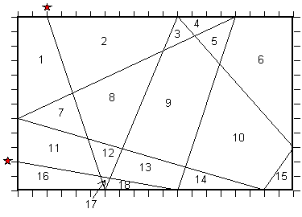

Problem H
Land Lords
Input: h.in
In the history of the world many stories are known of the arguments of large families about the distribution of the lands of the parents after their deaths. In some societies, the eldest living son would always receive the entire estate, making the position of eldest living son sometimes a dangerous one. In other societies, the estate would be divided up into equal parts, and each child would receive one part of the estate. This meant that a sizeable estate would be reduced to a large collection of small patches of land within a few generations.
In the land of Dukeswood a very rich farmer lived with a number of children, and he wanted to distribute his land over his children. He had a number of maps of his farmstead, which were fairly simple to make since his farmstead was a rectangular sized piece of land, and on each such map he drew a number of lines, thereby dividing the land into pieces. When drawing lines, he would always start on one of the boundaries of his land and draw a line to one of the other boundaries. The end point of this line was then the starting point of the next line, which would again lead to another boundary. The farmer would never draw a line that would a cross another line at a position where this other line was already crossing a different line (i.e. there would never be more than two lines crossing at any single point at once). One of the maps he drew is shown below:

The start point for this division can be either of the two points marked with a star. After he made a number of maps like this, the farmer counted the number of pieces of land in the map, to see if he had created enough pieces of land for each of his children. For instance, the map above contained 18 pieces of land, as the numbering clearly shows. However, the farmer would often lose count when he counted the pieces of land on a map, and that is where your help is requested.
You are asked to give the number of pieces of land on a map with a rectangular size and a number of lines drawn on it.
Input
The first line of the input contains the number of maps M (1 ≤ M ≤ 1,000). The description of one map starts with a line with two integers, the width w (1 ≤ w ≤ 1,000) and the height h (1 ≤ h ≤ 1,000) of the farmers land. The next line contains the number of lines L (1 ≤ L ≤ 1,000) the farmer has drawn on the map. Finally there are L+1 lines, each containing a co-ordinate (Xi, Yi) on a boundary of the land (i.e. either Xi is 0 or w, or Yi is 0 or h). The lines on the map are then formed by the points (Xi,Yi) and (Xi+1, Yi+1), for all i from 1 up to L (inclusive).
Output
For each test case, you must output a line containing the number of separate pieces of land on the map.
|
Sample Input |
Output for the Sample Input |
|
2 18 12 8 2 0 6 12 10 0 18 9 15 12 0 6 14 0 10 12 0 9 7 6 6 2 0 5 6 7 3 0 3 3 0 3 6 0 5 |
18 13 |